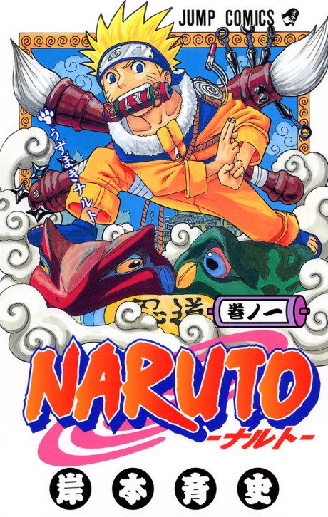
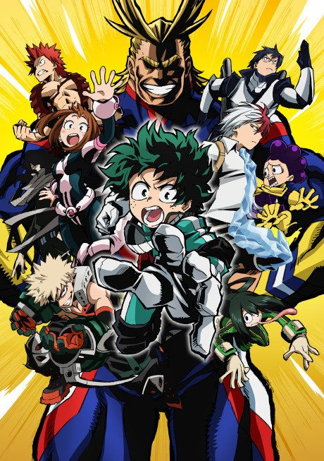
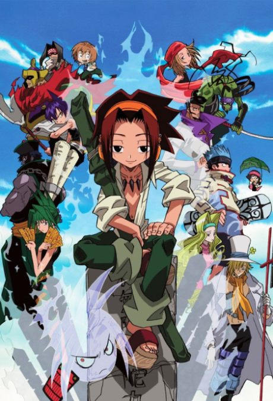
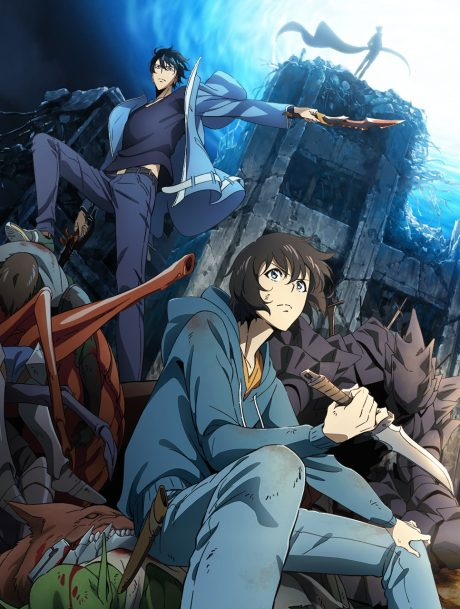
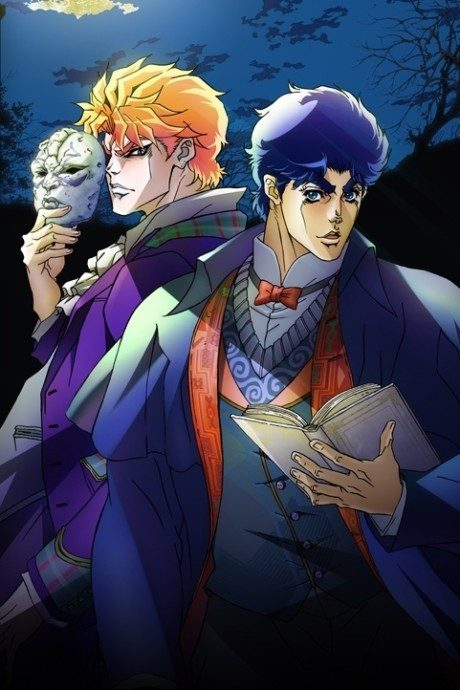

Naruto
NARUTO -ナルト-
Naruto, a mischievous young ninja who carries a demon fox inside him, dreams of becoming Hokage, the leader of his village.
The anime covers the whole manga.
8.0AniList score
—Animeter, no votes yet
720episodes, 2 seasons
Rate it or report where you stopped
2 seasons, 720 episodes
In airing order. Episode numbers on this site count straight through every season, so season 2 starts at episode 221.
1
2002 · TV
Naruto
Episodes1–220220 ep
2
2007 · TV
Naruto: Shippuden
Episodes221–720500 ep
Sources: AniList
More like Naruto
 Done8.3
Done8.3
 Manga Ch. 2707.9
Manga Ch. 2707.9
 Done8.1
Done8.1

Done7.7 Manga Ch. 3408.9
Manga Ch. 3408.9
 Done8.4
Done8.4
 Manga Ch. 11518.7
Manga Ch. 11518.7

Own end7.4
Manga Ch. 1118.0
Manga Ch. 6617.9
Bleach
Manga SBR 247.7 Done8.1
Done8.1